외벽 보수는 지금도 사람이 로프에 매달려 합니다
재해유형 1위, 떨어짐
2025년 사고사망자 872명 중 280명이 추락으로 숨졌습니다. 업종별로는 건설업이 41.4%로 가장 높았습니다.
사망 등 중대재해가 발생 시
경영책임자를 1년 이상 징역 또는 10억원 이하 벌금에 처함
중대재해처벌법은 2024년 1월 27일부터 상시근로자 5인 이상 사업장으로 확대 적용되었습니다. 2024년 9월에는 한 달 사이 건설현장 추락사고 7건으로 7명이 숨졌고, 주로 외벽 보수공사에서 발생했습니다(대한경제, 2024.09.12).
5인 이상 규모 방수공사업 사업주의 니즈
중대재해처벌법에 대한 리스크 해소
외벽 작업 중 인명 사고가 발생했을 때 법적 리스크를 피해갈 수 없기 때문에 상당한 부담이 있습니다.
안전보건관리체계 구축에 대한 어려움 해결
여러 현장에 걸쳐 일용직 근로자가 빈번히 출입하고 하도급 구조가 복잡해 체계를 구축·이행하기 어렵습니다.
인건비 절감 및 순이익 증가
외벽 작업 노동자의 인건비를 절감해 순이익을 높이고자 합니다.
CRAD 소개
작업자 완전 대체
전 작업이 자동화로 이루어져 작업자를 완전 대체하고 인명사고 리스크를 제거합니다. 육안검사보다 탐지율이 높아 신뢰성 있는 보수공사가 가능합니다.
드론의 한계 극복
배터리 때문에 드론은 비행시간이 한정됩니다. CRAD는 보수작업 시 벽면에 흡착한 뒤 프로펠러를 정지해 작업시간을 늘립니다.
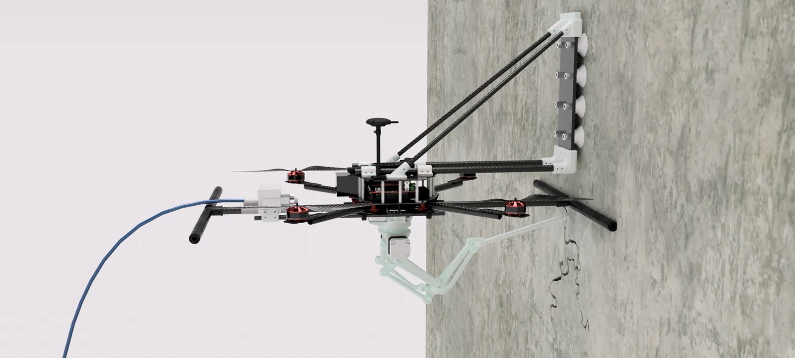
흡착패드 진공발생기 로봇암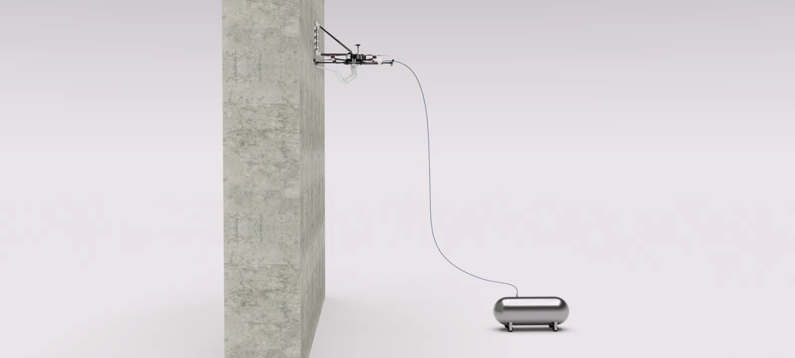
- 테더 호스를 통해 드론으로 압축공기 송출
- 압축공기는 드론의 진공발생기에서 진공압력 발생
- 진공압력으로 드론 흡착력 발생
진공 펌프를 기체에 싣지 않고 지상 컴프레서와 테더로 연결합니다. 이젝터는 압축공기만으로 진공을 만들어 추가 전원이 필요 없어서, 기체 중량과 전력 예산을 함께 줄입니다.
작업자의 외벽보수 과정
작업 종료까지 반복
CRAD의 외벽보수 과정
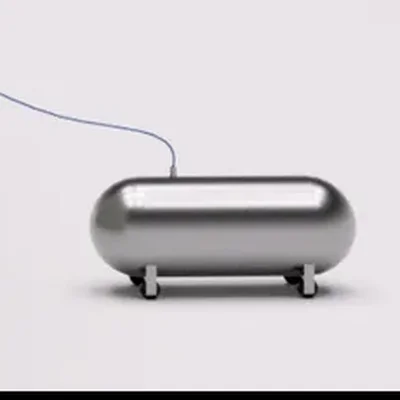
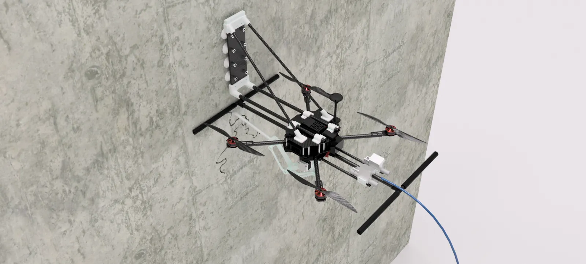
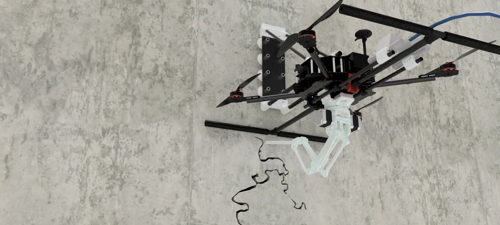
로프 재설치 없이 벽면을 따라 이동하며 탐지와 보수를 한 번에 수행합니다.
| 설계 항목 | 값 | 근거 |
|---|---|---|
| 목표 흡착력 | 261.3 N | 자유물체도 기반 외력 분석, 안전율 4 적용 |
| 목표 진공도 | 85.9 kPa | 목표 흡착력을 만족하는 진공도 |
| 흡착패드 구성 | 8개 (4 + 4) | 독립 유로 2개, 유로별 진공발생기. 한쪽 누설 시 패드 4개로 하중 지지 |
| 연결 구조물 안전계수 | ≥ 3 | 정적 구조해석. 카본 등 비등방성 재료의 피로 물성 불확실성을 반영해 상향 |
| 온보드 컴퓨터 · 카메라 | Jetson Orin Nano Super · IMX477 | 4032 × 3040 px 원본 이미지 |
| 로봇암 구동 | NEMA 17 × 3 | 흡착 상태에서 스텝모터만 구동 |
| 배터리 | 6S 5,200 mAh | 단일 팩 기준 작업시간 산정 |
넓게 빠르게 찾고, 붙어서 정밀하게 따라갑니다
픽셀 단위 Segmentation은 정확하지만 연산량이 커서 벽면 전체에 적용하기 어렵습니다. 그래서 탐지와 보수 경로 추출을 두 단계로 나눴습니다.
균열 유무 판정
- 모델
- YOLO11n Detection
- 입력
- 640×640 비중첩 타일 35장
- 추론
- 0.456 s (배치)
픽셀 단위 균열 경로 추출
- 모델
- SegFormer-B0
- 입력
- 50% 중첩 타일 108장
- 정합
- count-map 가중평균
- 추론
- 3.148 s (end-to-end)
Jetson 실기, 원본 1장 기준. 배치 추론으로 2단계 처리시간을 39.8% 단축했고, 두 단계 간 약 6.9배 차이를 실측해 2단계 구조의 근거로 삼았습니다.
후보 7종(YOLO11n-seg, YOLOv8n-seg, U-Net, DeepLabV3+, Fast-SCNN, DeepCrack, SegFormer-B0)을 같은 조건에서 학습하고 TensorRT FP16으로 변환해 Jetson에서 비교, IoU가 가장 높은 SegFormer-B0을 채택했습니다.
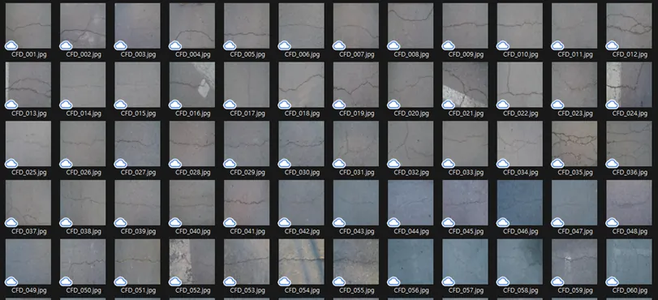
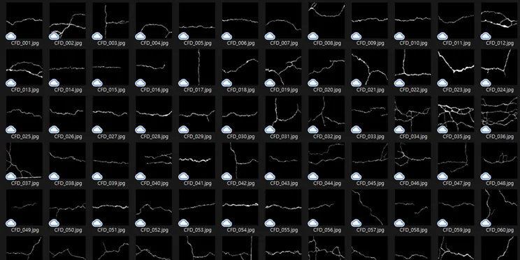
Train 9,038장 · Val 1,130장 · Test 1,130장 (8:1:1)
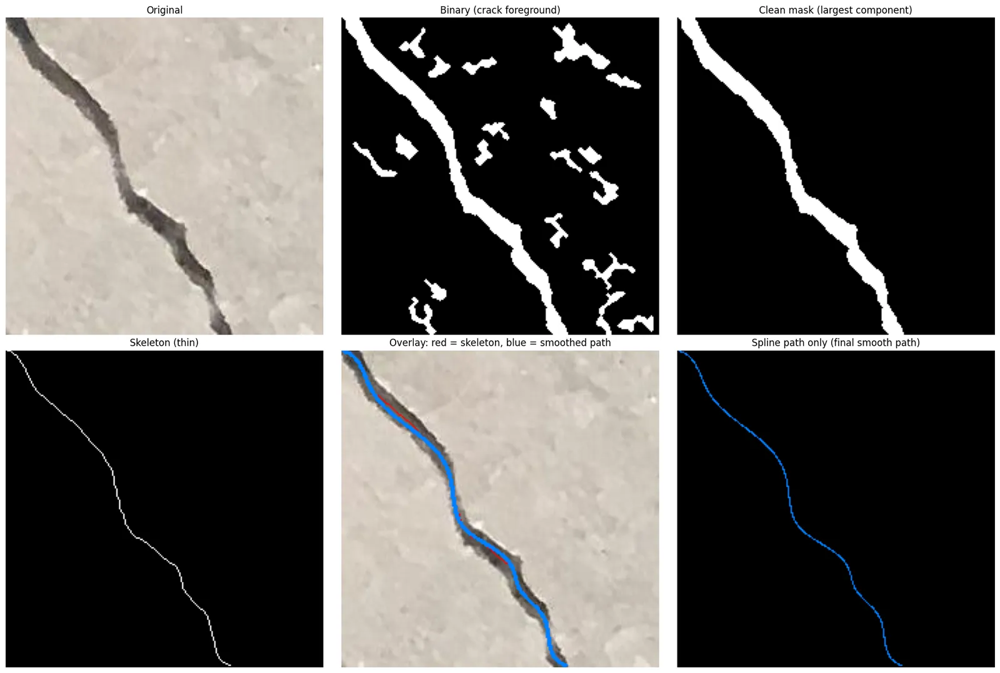
벽에 붙어 있는 동안은 프로펠러를 멈춥니다
흡착 상태에서는 추력 모터를 정지하고 NEMA 17 스텝모터 3개로만 로봇암을 구동합니다. 벽면에 고정되어 바람 같은 외란에도 정밀하게 보수할 수 있습니다.
소비전력
흡착 중 소비전력 약 52% 감소
배터리 1개당 작업시간 6S 5,200 mAh
전체 작업시간의 절반을 흡착 보수에 쓴다고 가정할 때 약 36% 증가
실물로 만들고 있습니다
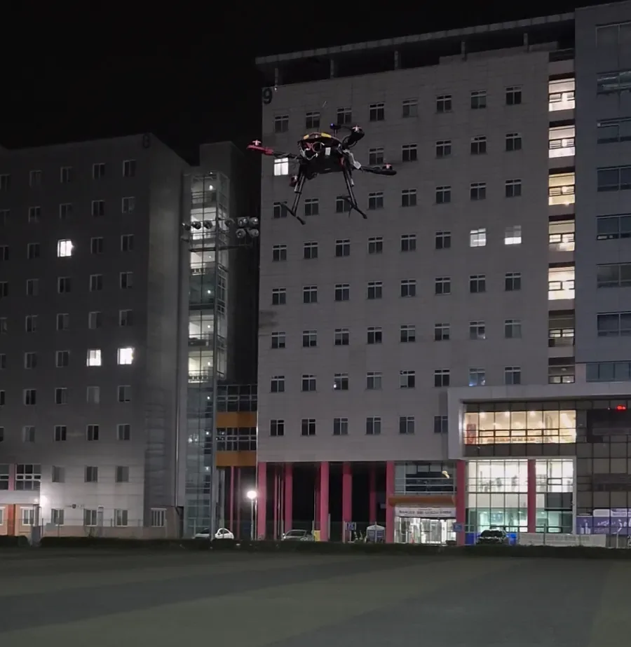
센서 융합 기반 자율비행 기체
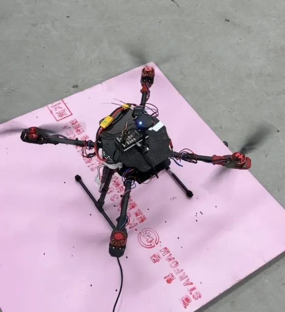
프레임과 탑재 전장
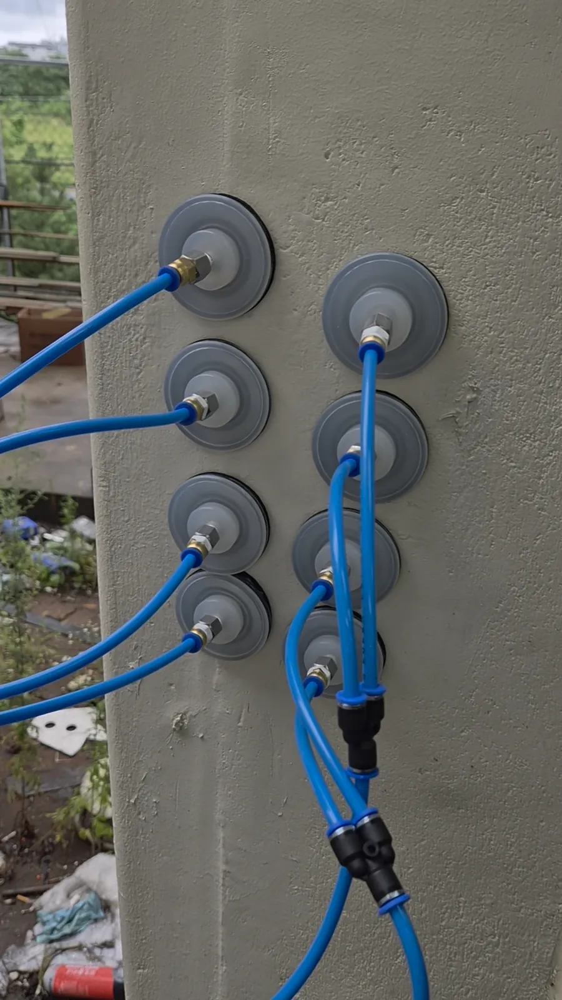
패드 8개 · 독립 유로 2개
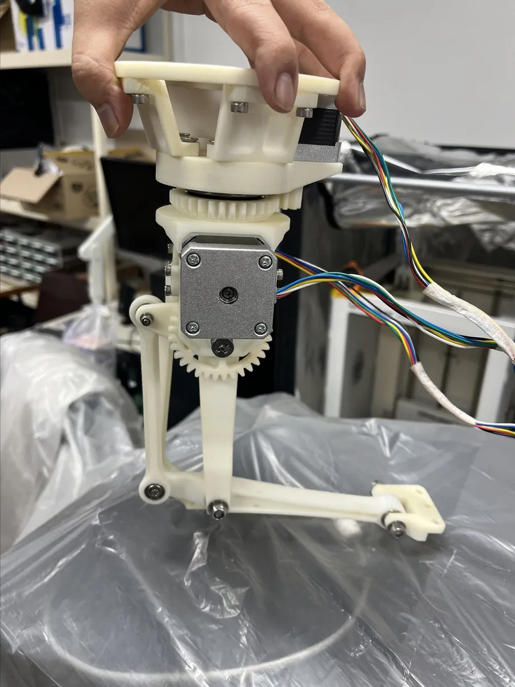
NEMA 17 스텝모터 구동
약 4,900개 업체
6,400억 원의 기회
전 세계 방수공사업
글로벌 방수·외벽 보수 서비스 시장
국내 방수공사 전문건설업
등록업체 12,198개, 연간 인건비 총액 약 1.6조 원
5인 이상 규모의 방수공사 전문건설업
등록업체 약 4,900개, 연간 인건비 총액 약 6,400억 원
출처: 대한건설정책연구원(RICON), 전문건설공제조합 보증실적 기반 수주동향(2024.02) · Navigating Exterior Wall Renovation Services Market Growth, MRA(2026)
노후화로 인한 외벽 보수 필요성 증가
타겟 시장의 성장 가능성
다각화된 수익 구조
균열 탐지 드론 서비스
CRAD 드론이 완성되기 전 탐지 서비스만으로 이윤을 창출합니다.
CRAD 드론 탐지, 보수 서비스
CRAD 드론이 필요한 건설사에 용역 서비스를 제공합니다.
CRAD 드론 판매
CRAD 드론의 수요가 많은 건설사에 직접 판매합니다.
경쟁사 대비 명확한 차별점
- 장점1타사 대비 저렴한 서비스 비용
- 장점2기존 작업자 방식보다 낮은 미탐지 확률 및 경쟁사와 동등한 성능
- 장점3탐지와 보수를 올인원으로 진행, 공사기간 감축 효과
산업과 고객을 가장 잘 이해하는 전문가들
장원준
국립공주대학교
- 2023 한국자동차공학회 대학생 자작자동차경진대회 금상
- 교내 창의융합경진대회 우수상
- KNU 학습공동체 우수팀
- 2026 대한기계학회 설계경진대회 본선 진출
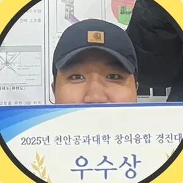
유현우
국립공주대학교
- 교내 창의융합경진대회 우수상
- KNU 학습공동체 우수팀
- 2026 대한기계학회 설계경진대회 본선 진출
임상준
국립공주대학교
- 교내 창의융합경진대회 우수상
- KNU 학습공동체 우수팀
- 2026 대한기계학회 설계경진대회 본선 진출
국립공주대학교 기계자동차공학부 기계공학전공 · 지도교수 김성관 교수
외벽보수공사 추락사고를 방지하는
가장 경제적인 해법.
도입 · 협업 · 투자 문의 (PM 장원준)
wonjun302@naver.com